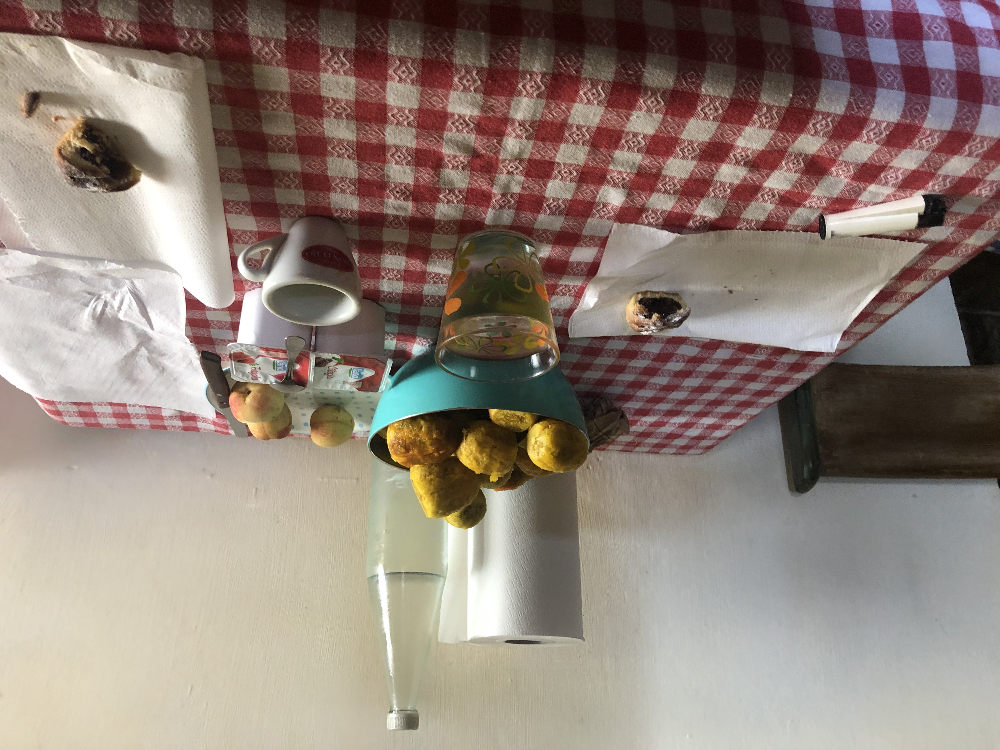
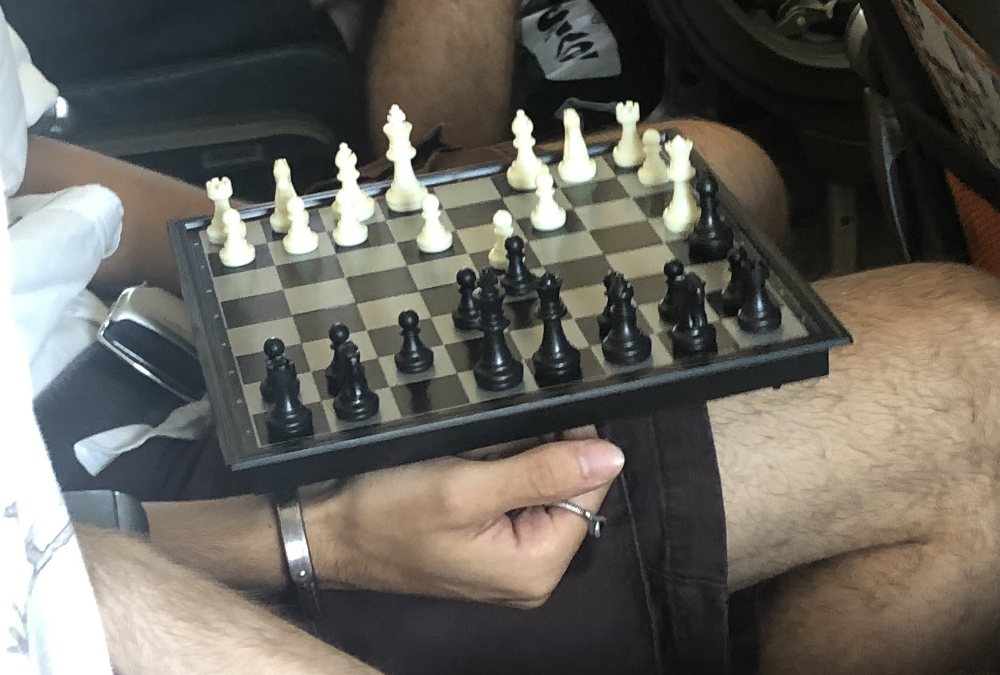
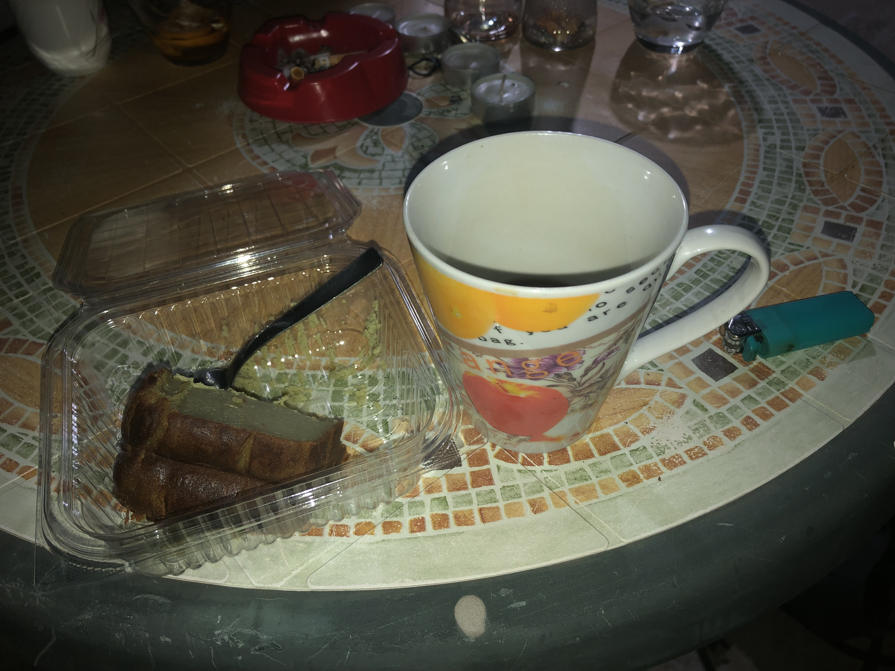
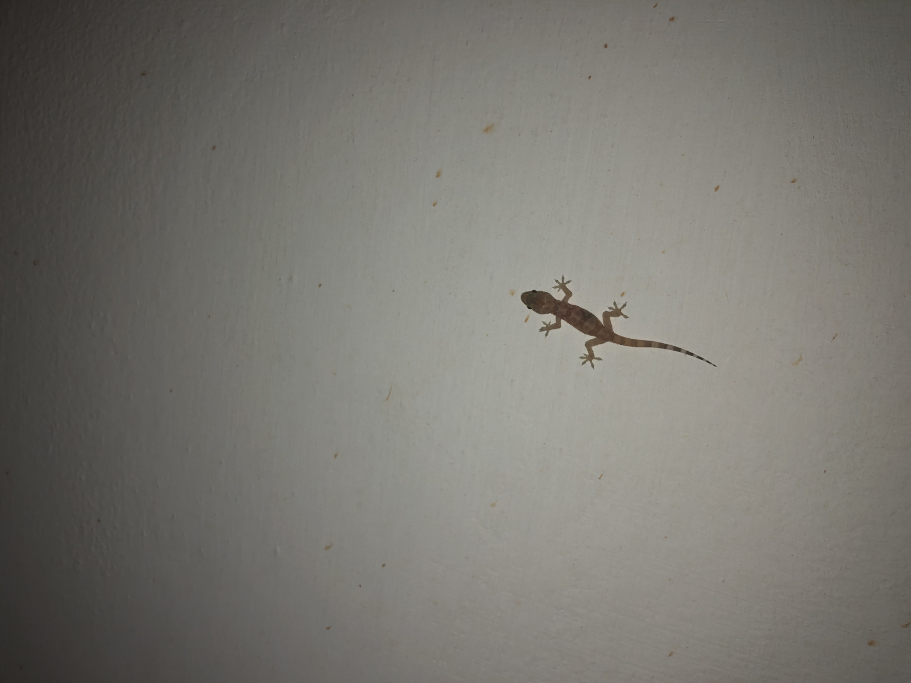
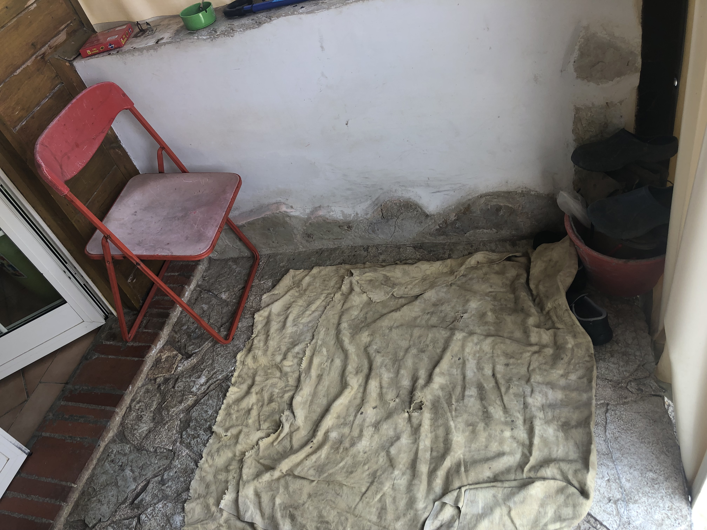
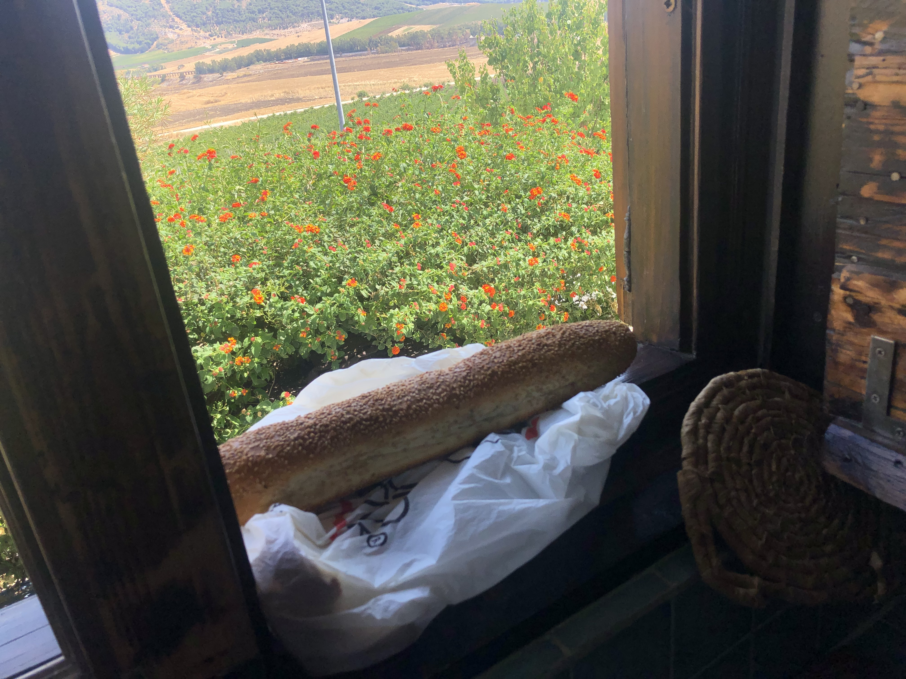
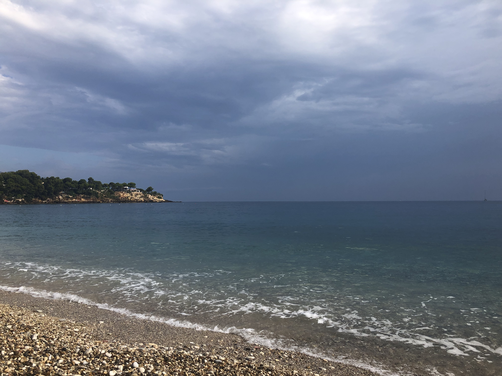
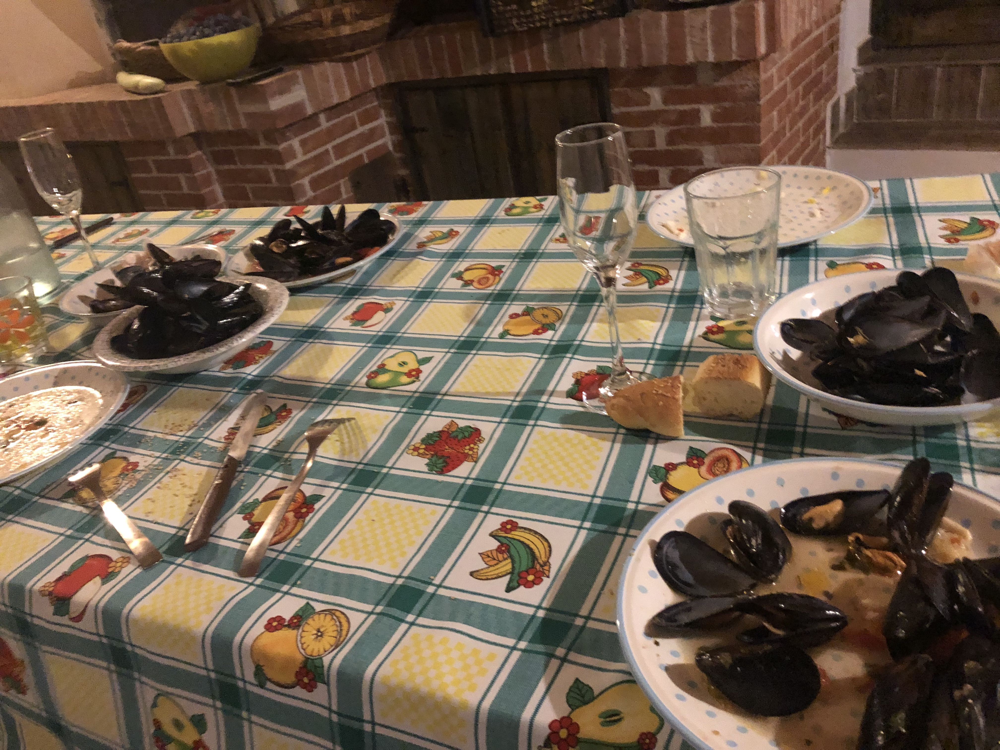

Breakfast Sicily, Prickly Pear we prepared, fig pastry, coffee. Niente sono andato a prendere la macchina e quando vogliamo fare colazione facciamo colazione
Nothing I went to get the car and when we want to have breakfast we have breakfast

Flight to Brindisi from Milan, Call me by your name youth playing Chess. They all cheered when we landed.

A Maritima dinner, Pistachio Flan from the supermarket, coffee and ciggerettes.

A lizard in Sicily.

Sicily home, smoke camera, where we sit and have coffee and talk. Poi poi quando riesci di fumare e entra dentro così rimani più che non ti mangiano le zanzare perché adesso 10 minuti attaccano
Then then when you manage to smoke and go inside so it remains more that the mosquitos do not eat you because now 10 minutes they attack bikes

Pane, warming up on the windowsil.

First swim in Sicily with Giuseppe and thomas. We got there early. Ti volevo dire se ce la fai domani mattina la tarta per le 7 essere pronta così che facciamo colazione cafferino veloce così e andiamo al mare accompagnare prima accompagniamo mia moglie no E poi si da lì ce ne andiamo al mare visto che siamo in Castellammare zona di Castellammare
I wanted to tell you if you can make it tomorrow morning the tarta for 7 be ready so that we have a quick coffee breakfast like this and we go to the sea first accompany my wife no And then yes from there we go to the sea since we are in Castellammare area of Castellammare

They cooked me Mussels, after Giuseppe took me on the yamaha. La moto si chiamo Yamaha 850 TDM nella prima serie
The bike is called Yamaha 850 TDM in the first series